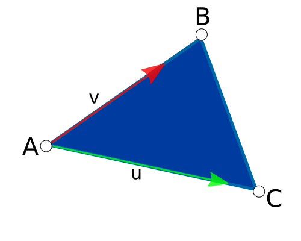

| Top |
Functions
| graphene_triangle_t * | graphene_triangle_alloc () |
| void | graphene_triangle_free () |
| graphene_triangle_t * | graphene_triangle_init_from_point3d () |
| graphene_triangle_t * | graphene_triangle_init_from_vec3 () |
| void | graphene_triangle_get_points () |
| void | graphene_triangle_get_vertices () |
| float | graphene_triangle_get_area () |
| void | graphene_triangle_get_midpoint () |
| void | graphene_triangle_get_normal () |
| void | graphene_triangle_get_plane () |
| void | graphene_triangle_get_bounding_box () |
| bool | graphene_triangle_get_barycoords () |
| bool | graphene_triangle_contains_point () |
| bool | graphene_triangle_equal () |
Functions
graphene_triangle_alloc ()
graphene_triangle_t *
graphene_triangle_alloc (void);
Allocates a new graphene_triangle_t.
The contents of the returned structure are undefined.
[constructor]
Returns
the newly allocated graphene_triangle_t
structure. Use graphene_triangle_free() to free the resources
allocated by this function.
[transfer full]
Since: 1.2
graphene_triangle_free ()
void
graphene_triangle_free (graphene_triangle_t *t);
Frees the resources allocated by graphene_triangle_alloc().
Since: 1.2
graphene_triangle_init_from_point3d ()
graphene_triangle_t * graphene_triangle_init_from_point3d (graphene_triangle_t *t,const graphene_point3d_t *a,const graphene_point3d_t *b,const graphene_point3d_t *c);
Initializes a graphene_triangle_t using the three given 3D points.
Since: 1.2
graphene_triangle_init_from_vec3 ()
graphene_triangle_t * graphene_triangle_init_from_vec3 (graphene_triangle_t *t,const graphene_vec3_t *a,const graphene_vec3_t *b,const graphene_vec3_t *c);
Initializes a graphene_triangle_t using the three given vectors.
Since: 1.2
graphene_triangle_get_points ()
void graphene_triangle_get_points (const graphene_triangle_t *t,graphene_point3d_t *a,graphene_point3d_t *b,graphene_point3d_t *c);
Retrieves the three vertices of the given graphene_triangle_t and returns their coordinates as graphene_point3d_t.
Parameters
t |
||
a |
return location for the coordinates of the first vertex. |
[out caller-allocates][optional] |
b |
return location for the coordinates of the second vertex. |
[out caller-allocates][optional] |
c |
return location for the coordinates of the third vertex. |
[out caller-allocates][optional] |
Since: 1.2
graphene_triangle_get_vertices ()
void graphene_triangle_get_vertices (const graphene_triangle_t *t,graphene_vec3_t *a,graphene_vec3_t *b,graphene_vec3_t *c);
Retrieves the three vertices of the given graphene_triangle_t.
Parameters
t |
||
a |
return location for the first vertex. |
[out caller-allocates][optional] |
b |
return location for the second vertex. |
[out caller-allocates][optional] |
c |
return location for the third vertex. |
[out caller-allocates][optional] |
Since: 1.2
graphene_triangle_get_area ()
float
graphene_triangle_get_area (const graphene_triangle_t *t);
Computes the area of the given graphene_triangle_t.
Since: 1.2
graphene_triangle_get_midpoint ()
void graphene_triangle_get_midpoint (const graphene_triangle_t *t,graphene_point3d_t *res);
Computes the coordinates of the midpoint of the given graphene_triangle_t.
The midpoint G is the centroid of the triangle, i.e. the intersection of its medians.
Since: 1.2
graphene_triangle_get_normal ()
void graphene_triangle_get_normal (const graphene_triangle_t *t,graphene_vec3_t *res);
Computes the normal vector of the given graphene_triangle_t.
Since: 1.2
graphene_triangle_get_plane ()
void graphene_triangle_get_plane (const graphene_triangle_t *t,graphene_plane_t *res);
Computes the plane based on the vertices of the given graphene_triangle_t.
Since: 1.2
graphene_triangle_get_bounding_box ()
void graphene_triangle_get_bounding_box (const graphene_triangle_t *t,graphene_box_t *res);
Computes the bounding box of the given graphene_triangle_t.
Since: 1.2
graphene_triangle_get_barycoords ()
bool graphene_triangle_get_barycoords (const graphene_triangle_t *t,const graphene_point3d_t *p,graphene_vec2_t *res);
Computes the barycentric coordinates
of the given point p
.
The point p
must lie on the same plane as the triangle t
; if the
point is not coplanar, the result of this function is undefined.
If we place the origin in the coordinates of the triangle's A point,
the barycentric coordinates are u, which is on the AC vector; and v
which is on the AB vector:

The returned graphene_vec2_t contains the following values, in order:
res.x = ures.y = v
Parameters
t |
||
p |
[nullable] | |
res |
return location for the vector with the barycentric coordinates. |
[out caller-allocates] |
Since: 1.2
graphene_triangle_contains_point ()
bool graphene_triangle_contains_point (const graphene_triangle_t *t,const graphene_point3d_t *p);
Checks whether the given triangle t
contains the point p
.
Since: 1.2
graphene_triangle_equal ()
bool graphene_triangle_equal (const graphene_triangle_t *a,const graphene_triangle_t *b);
Checks whether the two given graphene_triangle_t are equal.
Since: 1.2